地政学
メルボルンは豪州南東部の州都で、キャンベラの政治、シドニーの金融、南極海とインド太平洋の物流を結びます。移民政策、大学外交、スポーツ外交、気候適応が交わる南半球の重要な都市圏です。湾岸の玄関でもあります。

🇦🇺 オーストラリア / オセアニア / World City Atlas
ポートフィリップ湾、移民の街区、大学、医療研究、金融、港湾、芸術、スポーツ、食、市場、住宅難、路面電車が重なるオーストラリア南部の大都市です。
都市の骨格
ポートフィリップ湾、ヤラ川、CBDの格子、大学と病院、港、郊外鉄道、移民の商店街が、南半球の大都市を生活の細部まで形づくっています。
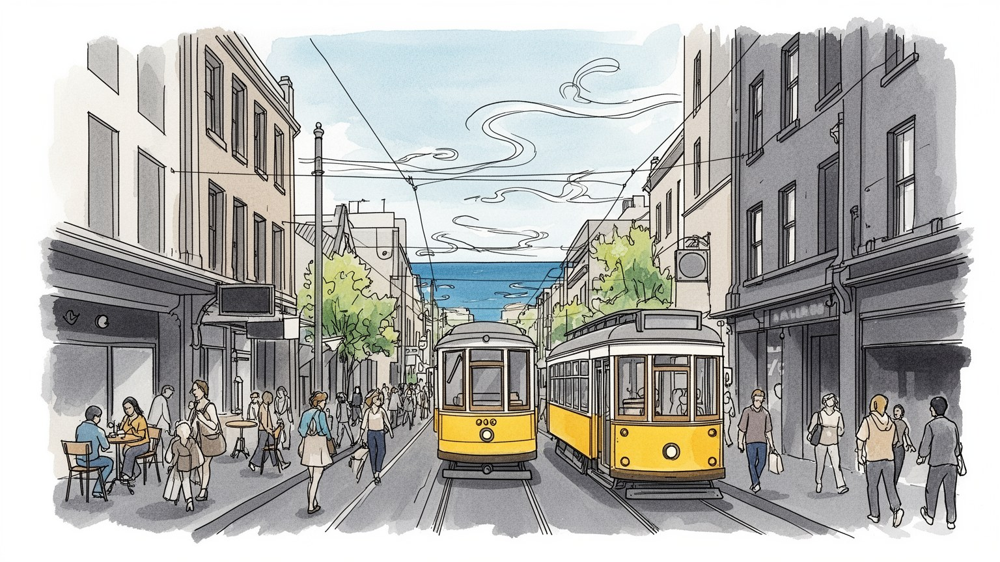
メルボルンは豪州南東部の州都で、キャンベラの政治、シドニーの金融、南極海とインド太平洋の物流を結びます。移民政策、大学外交、スポーツ外交、気候適応が交わる南半球の重要な都市圏です。湾岸の玄関でもあります。
教育、医療、金融、港湾、建設、IT、文化産業、観光が雇用を作ります。専門職と留学生、介護、清掃、配達、飲食、倉庫、郊外工場、競技場の仕事が近接し、家賃と通勤時間が暮らしを左右します。週末経済も柱です。
カフェ、演劇、映画、AFL、移民の祭礼、教会、モスク、寺院、シナゴーグが都市の層を作ります。先住民クリン人の記憶と多文化の現在が重なり、市場の匂いや路地の夜の音楽にも歴史が残ります。更新が続く都市です。
旅行者は湾岸、路面電車、市場、美術館、競技場を巡りますが、住民には住宅価格、郊外通勤、山火事煙、急変する天気、教育費が日常の課題です。住みやすさの評判と生活費の重さが同居します。郊外の距離も課題です。
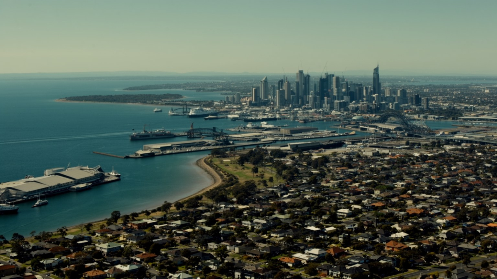
メルボルンの地理は、ポートフィリップ湾の奥に開いた水面と、そこへ注ぐヤラ川から始まります。CBDの格子街路は川の北岸に置かれ、港、鉄道駅、倉庫、銀行、劇場、大学へ少しずつ広がりました。湾は外洋の荒さから市街地を守り、海水浴、ヨット、フェリー、埠頭、湿地、公園を並べる穏やかな前庭になります。一方で、市街地西側の港湾物流は高速道路と工業地帯に結びつき、観光客が見る水辺とは別の実務を担います。東の丘陵と緑の郊外、西と北の新興住宅地、南東の雇用拠点、湾岸の高級住宅は、それぞれ違う生活条件を作ります。晴れた朝に海風が入り、午後には雲が走って気温が落ちる急変も珍しくありません。夏の乾いた日には遠い山火事の煙が薄くかかり、湾の眺めも乳白色に沈みます。中心部は歩きやすいですが、実際の都市圏は郊外鉄道、トラム、車、バスで支えられる広い都市です。水辺の美しさだけを見ると、低地の浸水、港湾の排出、湿地の保全、海面上昇への備えを見落とします。週末の桟橋や公園の余暇と、貨物船の航路、下水、野鳥の生息地、空港や高速道路の配置は同じ地図にあります。湾岸のカフェで聞くカップの音も、背後の港と住宅地の距離を忘れさせません。新しい橋や再開発も、都市の輪郭を少しずつ変えます。湾と川は観光の背景ではなく、物流、住宅、余暇、防災、先住民の記憶を重ねる都市の骨格です。
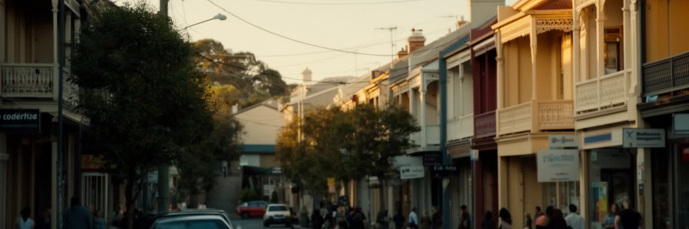
メルボルンは、英国植民都市の形を持ちながら、戦後の欧州移民、ベトナム難民、中国系、インド系、ギリシャ系、イタリア系、中東系、アフリカ系、太平洋諸島系の住民によって大きく作り替えられてきました。カールトン、フッツクレイ、リッチモンド、スプリングヴェイル、ダンデノン、ブランズウィックには、食料品店、礼拝所、語学学校、送金、法律相談、移民支援が集まります。市場の値札、店先の香辛料、夜の音楽、祝祭の日の行列は、多文化性を観光向けの飾りではなく生活として見せます。工場、介護、清掃、建設、配達、大学、医療、ITの現場も移民労働に支えられますが、英語力、資格認定、在留資格、差別、住宅の過密、通勤の長さは選択肢を狭めます。留学生は授業料と消費で都市経済を支えつつ、学費、家賃、アルバイト、孤立、労働搾取の不安を抱えます。二世や三世の若者は、家庭の言語と学校の英語、宗教行事と都市の消費文化、AFLの応援と故郷の祭礼を行き来します。週末には子どものスポーツ送迎、高齢者の買い物、家族の外食が商店街を動かします。図書館、地域医療、スポーツクラブ、小さな商店は、その調整を支える場です。近隣を読むには、カフェの洗練だけでなく、日曜の礼拝、放課後の多言語、深夜の配送、路上で交わされる値段交渉まで見る必要があります。移民の街区は、都市が現在も変化し続ける現場です。
メルボルンの都市経済を語る時、大学と医療研究の存在は欠かせません。メルボルン大学、モナシュ大学、RMIT、ラ・トローブ大学、ディーキン大学などは国内外の学生を集め、研究費、起業、出版、住宅需要、文化活動を生みます。学期初めのキャンパスでは、スーツケースを引く留学生、図書館へ向かう地元の学生、カフェで課題を開く若者が同じ通りを使います。パークビル周辺には病院、医学研究所、バイオテック企業が密集し、がん、感染症、免疫、神経科学、データ医療の研究が国際性を高めます。教育産業は授業料や雇用をもたらしますが、留学生の生活は為替、ビザ、アルバイト、家賃、孤独に左右されやすいです。夜のコンビニ、厨房、配達、イベント設営で働く学生も多く、学びと労働の境目は思ったより近いです。大学の成功は中心部と周辺地区の土地価格を押し上げ、学生向け高層住宅や短期賃貸も増やします。研究棟の華やかさの背後には、実験補助、図書館、清掃、警備、食堂、通訳、学生相談の労働があります。病院の臨床現場では、看護師、技師、救急搬送、清掃、通訳が研究都市の実力を日々支えます。地域の高校や企業との連携も、人材の裾野を広げます。知識都市として評価するには、論文数だけでなく、学ぶ人が安心して住めるか、研究成果が地域医療や公共政策へ届くか、大学が近隣へ何を返すかを見る必要があります。
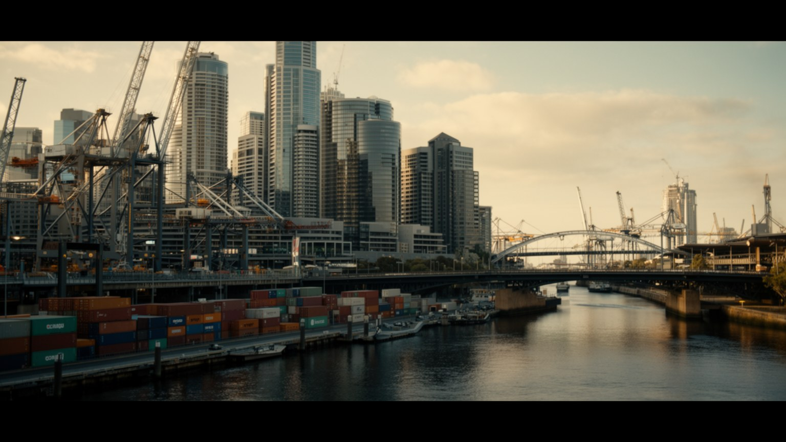
メルボルンの経済は文化都市の印象が強いですが、金融、年金運用、保険、法律、会計、不動産、港湾物流も大きな柱です。CBDとドックランズには銀行、企業本社、専門サービス、スタートアップ、州政府機関が集まり、ビクトリア州の投資と雇用の判断を下します。ポート・オブ・メルボルンは国内有数のコンテナ港で、食品、医薬品、機械、消費財、輸出入の流れを支えます。背後には倉庫、トラック、鉄道、冷蔵物流、通関、整備、警備、清掃、配送の仕事があります。オフィス街の昼休みにはカフェの列と買い物袋が目立ちますが、早朝の市場や路上販売、配達アプリ、週末の競技場周辺の露店も、同じ都市経済の表情です。地元紙、ラジオ、テレビ、オンラインニュースは、金利、住宅、競馬、スポーツ、交通障害を毎日の話題に変えます。金融職や専門職の高い賃金は購買力を押し上げる一方、中心部の住宅価格とサービス価格も高めます。港湾の拡張や道路整備は効率を生みますが、騒音、大気、交通、労働条件をめぐる対立も起きます。郊外工場の食品加工や医薬品製造も、州全体の農業と研究を都市へつなぎます。港の遅れや道路混雑は小売価格、病院の在庫、建設費にも波及します。メルボルンを読むには、年金資金が動く会議室、夜に荷物をさばく埠頭、郊外の物流施設、買い物客で混む商業施設を同じ地図に置く必要があります。
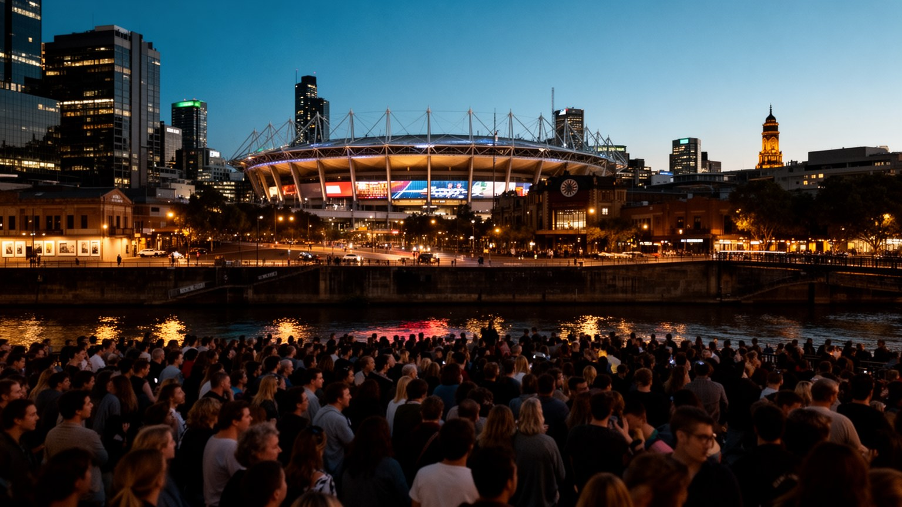
メルボルンの文化は、劇場、美術館、映画、音楽、文学、デザイン、路地の壁画、書店、フェスティバル、そしてスポーツによって濃く編まれています。フェデレーション・スクエア、ナショナル・ギャラリー、アーツ・センター、独立劇場、ライブハウスは、観光客だけでなく住民の夜と週末を支えます。スポーツではAFLのグランドファイナル、MCGのクリケット、メルボルン・パークの全豪オープン、アルバート・パークのF1、フレミントンの競馬が季節を変え、都市全体に人の波を作ります。トラムのベル、応援歌、放送ヘリ、夜の路地から漏れる演奏は、街の暦を耳でも知らせます。春のレーシングカーニバル、夏のテニス、冬のフットボール、各地の多文化フェスティバルは、服装、会話、宿泊料金、飲食店の混雑まで変えます。文化とスポーツは誇りであると同時に、チケット価格、公共支出、騒音、警備、交通規制、労働条件の問題も伴います。大イベントの背後では、設営、清掃、警備、飲食、放送、交通案内の仕事が深夜まで続きます。創造的な都市として語られやすいですが、芸術家や若い制作者が中心部に住みにくくなると、その創造性は細くなります。公共文化を守るには、練習場所、小劇場、助成、安い家賃、夜間交通、参加しやすい料金が重要です。地域クラブと小さな舞台を支える力が都市の成熟を示します。
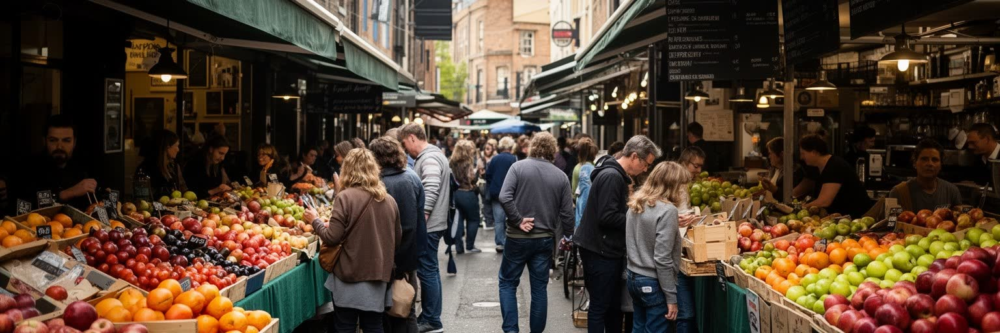
メルボルンの食文化は、カフェの評判だけでは説明できません。クイーン・ビクトリア・マーケット、サウス・メルボルン・マーケット、郊外のアジア系食料品店、ギリシャ料理、イタリア料理、ベトナム料理、インド料理、中東料理、エチオピア料理、先住民食材への関心が味覚を広げています。朝の路地には焙煎した豆の匂いが残り、トラムの音とエスプレッソマシンの蒸気、新聞を読む客、出勤前の列が重なります。市場は観光名所である前に、家庭の買い物、商人の声、季節の食材、移民の商売の場所です。外食の豊かさの背後には、早朝の仕入れ、皿洗い、厨房、清掃、配送、深夜営業、留学生や移民労働者の不安定な仕事があります。物価と家賃が上がるほど、小さな店は中心部から郊外へ移り、住民の食の選択肢も変わります。買い物客は大型モール、古着店、路地の雑貨店、週末市を使い分け、子どもの弁当や高齢者の一人分の食材も市場の風景になります。カフェの一杯は会議、休憩、初対面、老夫婦の散歩の目的地にもなります。郊外のフードコートや商店街は、家族の外食、礼拝後の食事、故郷の食材探しを支える生活の拠点です。ナイトマーケットや音楽イベントでは食、買い物、路上経済が結びつきます。皿の上には、移民の記憶、農地と港、学費を払う学生のアルバイト、近所で顔を覚える関係が折りたたまれています。
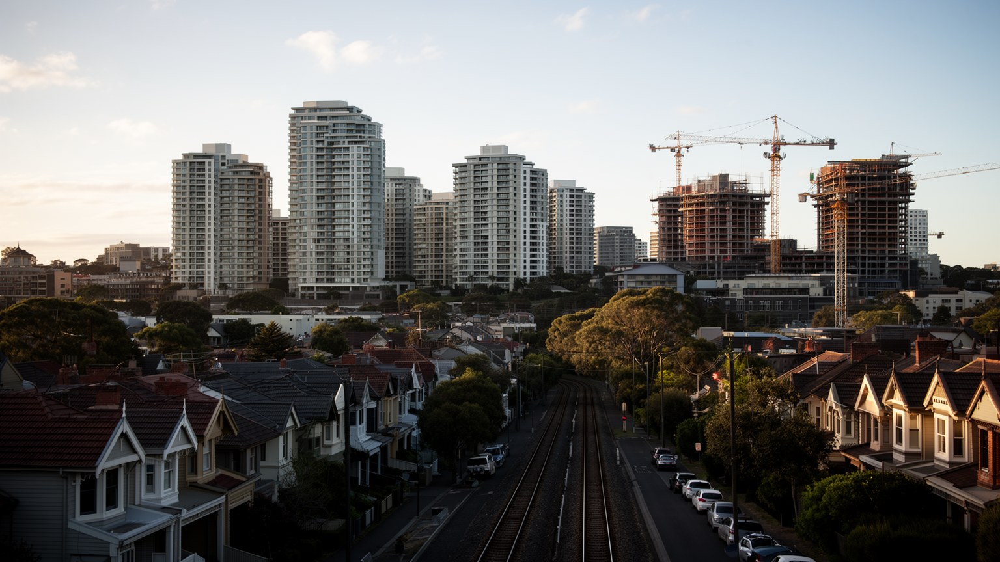
メルボルンの暮らしで最も重い課題の一つは住宅です。中心部の高層アパート、内側郊外のテラスハウス、湾岸の住宅、外縁部の新興住宅地、公営住宅、学生向け住居が同じ都市圏に並びます。人口増加と移民、留学生、投資、建設費の上昇が重なり、家賃と購入価格は多くの世帯に重くのしかかってきました。中心部に近いほど仕事、大学、病院、文化施設へ行きやすいですが、住める人は限られます。外縁の新興住宅地では、広い家を得ても通勤、学校、医療、買い物、公共交通の不足が生活時間を奪います。子ども連れは保育所、校区、公園、雨の日の移動に悩み、高齢者は古い住宅の修繕費、冷暖房、医療への距離、買い物の重さに直面します。放課後のスポーツ、週末の市場、図書館の涼しい部屋、近所のカフェでの短い会話が、郊外生活の支えにもなります。住宅問題は部屋の数だけでなく、断熱、冷房、暖房、火災安全、緑、孤立、家族の支援、通勤費まで含みます。公営住宅の建て替えや高密度化は供給を増やす可能性を持つ一方、既存住民の移転やコミュニティの継続を慎重に扱う必要があります。若い人はシェアハウスや親元暮らしを長く続け、賃貸契約の不安定さは学校、職場、近所の支援を失うリスクにもなります。住みやすさは、看護師、清掃員、学生、教師、配達員、若い家族がどこに住めるかで試されます。
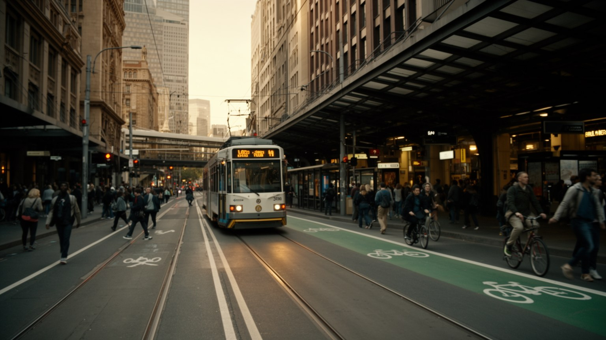
メルボルンの路面電車は都市の象徴であり、中心部と内側郊外の移動を支える実用的な交通でもあります。格子状のCBDを走るトラム、放射状に伸びる鉄道、バス、高速道路、自転車道、徒歩のネットワークが、広い都市圏を何とか結びつけています。朝の交差点ではベルの音、レールのきしみ、カフェから漂うコーヒーの匂い、通勤客の足音が重なり、街の時間を作ります。無料トラムゾーンは観光客に便利ですが、住民の通勤は郊外鉄道の本数、乗換、駅までの距離、駐車、バス接続に大きく左右されます。試合や全豪オープン、F1の日には停留所が一気に混み、普段の買い物や通院の移動もイベントの波に巻き込まれます。人口が外縁へ広がるほど、自動車依存と渋滞が増え、低所得世帯ほど時間と燃料費を失いやすいです。鉄道の新線や地下区間、空港アクセス、トラムの優先信号、バリアフリー化は、都市の成長に追いつくための長い投資です。交通は観光の便利さだけでなく、夜勤の看護師、早朝の清掃員、学生、障害者、高齢者、子ども連れが安全に移動できるかで評価されます。子どもの通学と高齢者の通院は、時刻表の小さな乱れにも影響されます。停留所の屋根、段差、車内の混雑、猛暑や急な雨の日の待ち時間も公平さを左右します。絵になるトラムだけでなく、遠い郊外から毎朝CBDへ向かう時間を見る必要があります。
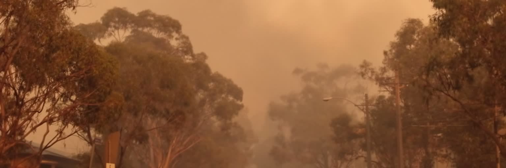
メルボルンの気候は、乾いた暑い夏、涼しい冬、南からの海風、短時間で変わる天気で知られます。朝は上着が必要でも昼に強い日差しが刺し、夕方には冷たい風と雨が来る日があります。過ごしやすい日も多いですが、熱波、干ばつ、激しい雨、洪水、山火事の煙は都市の脆弱性を露出させます。内陸から熱い風が入る日は気温が急上昇し、高齢者、子ども、屋外労働者、冷房の弱い住宅、木陰の少ない地区ほど健康リスクが高まります。周辺の森林や草地で大規模な火災が起きれば、焦げた匂いを含む煙が都市へ流れ、学校、スポーツ、通勤、ぜんそく患者、屋外イベントに影響します。クリケットやテニス、子どもの校庭遊び、競馬場の人波も、暑さと空気質の判断に左右されます。ヤラ川流域や低地では豪雨による浸水も課題になり、湾岸では海面上昇と高潮への備えが必要です。突然の雨で市場のテントが鳴り、数十分後には強い日差しが戻ることもあります。気候対策は、環境意識の高い都市イメージだけで終わりません。街路樹、涼しい避難場所、断熱住宅、公共交通の暑さ対策、排水、湿地保全、警報の多言語化、火災時の空気質情報が生活を守ります。停電時の冷房、公共施設の開放、学校行事の中止判断、在宅勤務の可否も日常の安全に関わります。変わりやすい天気は魅力でもありますが、気候変動の下では都市運営の課題です。
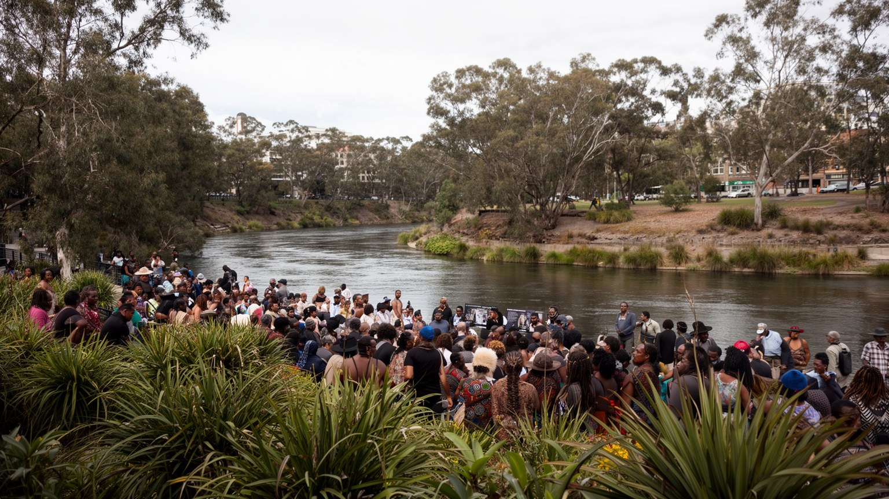
メルボルンを理解するには、植民都市としての始まりより前に、クリン人の土地としての時間を見る必要があります。ヤラ川、湿地、湾岸、狩猟採集、儀礼、移動の道、季節の知識は、現在の格子街路や高層ビルの下に消えたのではなく、地名、記憶、文化活動、土地権をめぐる議論として残っています。欧州入植は土地の収奪、病気、暴力、移動制限、子どもの分離をもたらし、都市の発展の物語にはその痛みが含まれます。現在のメルボルンでは、先住民のアート、教育、式典、言語復興、文化センター、抗議運動、アボリジナル旗が公共空間に現れます。MCGや美術館、大学、祝祭での土地承認は入口になりますが、言葉だけでは足りません。スポーツ中継やメディアが先住民選手を称える場面も増えましたが、差別や歴史の扱いをめぐる議論は続きます。健康格差、住宅、収監、教育、土地管理、文化財保護、都市開発への参加が問われます。川辺の再開発や公園整備も、記憶を消すのか、学ぶ入口を作るのかで意味が変わります。観光客が美術館や川沿いを歩く時、そこは単なる現代都市の景観ではなく、長い先住民の関係が続く場所です。多文化性を語るなら、移民の成功だけでなく、最初の住民との関係を中心に置く必要があります。都市の公共性は、誰の記憶を地図に載せ、誰が土地の未来を語れるかによって測られます。
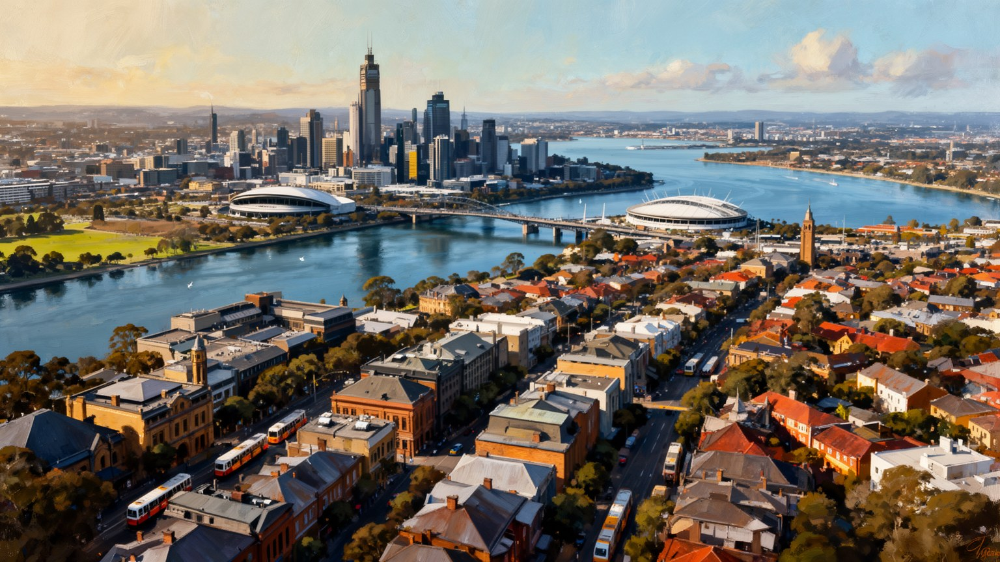
メルボルンは、住みやすい都市、カフェと芸術の街、スポーツの首都、多文化都市として記憶されやすいです。その印象は確かに魅力を捉えていますが、それだけでは湾岸地理、港湾物流、大学と医療研究、移民労働、住宅難、郊外の長い通勤、先住民の記憶、熱波と火災煙のリスクを見落とします。中心部の路地や市場を歩く楽しさは、清掃、配達、厨房、トラム運転、倉庫、介護、学生アルバイトに支えられます。朝のコーヒーの匂い、レールの音、AFLやクリケットの歓声、全豪オープンやF1の日の混雑、競馬の日の服装、夜のライブハウスは華やかですが、働く人の長い時間も映します。大学と研究機関は世界から人を集めますが、留学生の生活と近隣の家賃にも影響します。新聞、ラジオ、テレビ、オンラインメディアは、住宅、天気、スポーツ、食、交通の話題を結び、都市の自己像を毎日作ります。山火事煙の日も、晴れた市場の朝も、同じ都市の記憶として残ります。スポーツと芸術は公共文化を豊かにする一方、誰が参加できる料金と場所を持つかが問われます。CBD、港、パークビル、フッツクレイ、ダンデノン、湾岸、外縁の新興住宅地、ヤラ川沿いの先住民の記憶を同じ地図に置く視点が必要です。住みやすさとは、景観や評判ではなく、住民が家賃を払い、涼しく移動し、学び、働き、文化に参加できる条件の総合です。